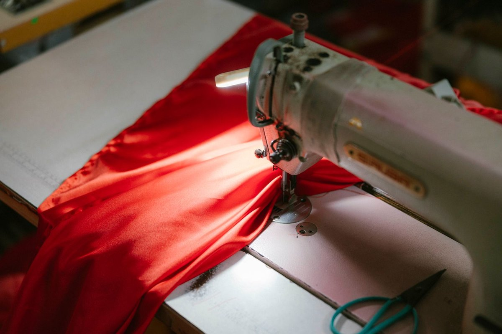
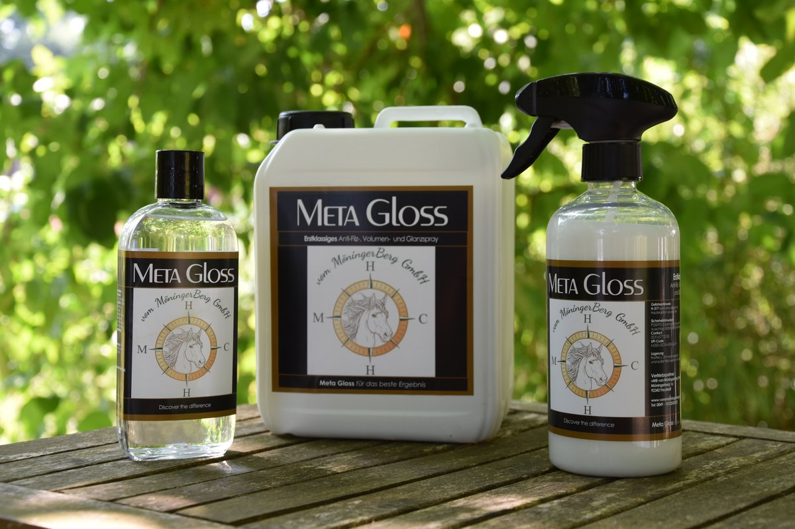
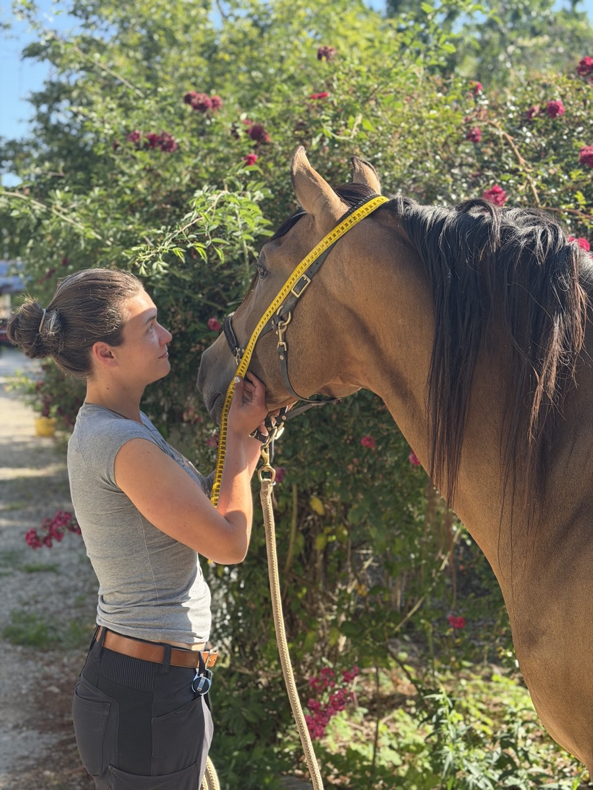
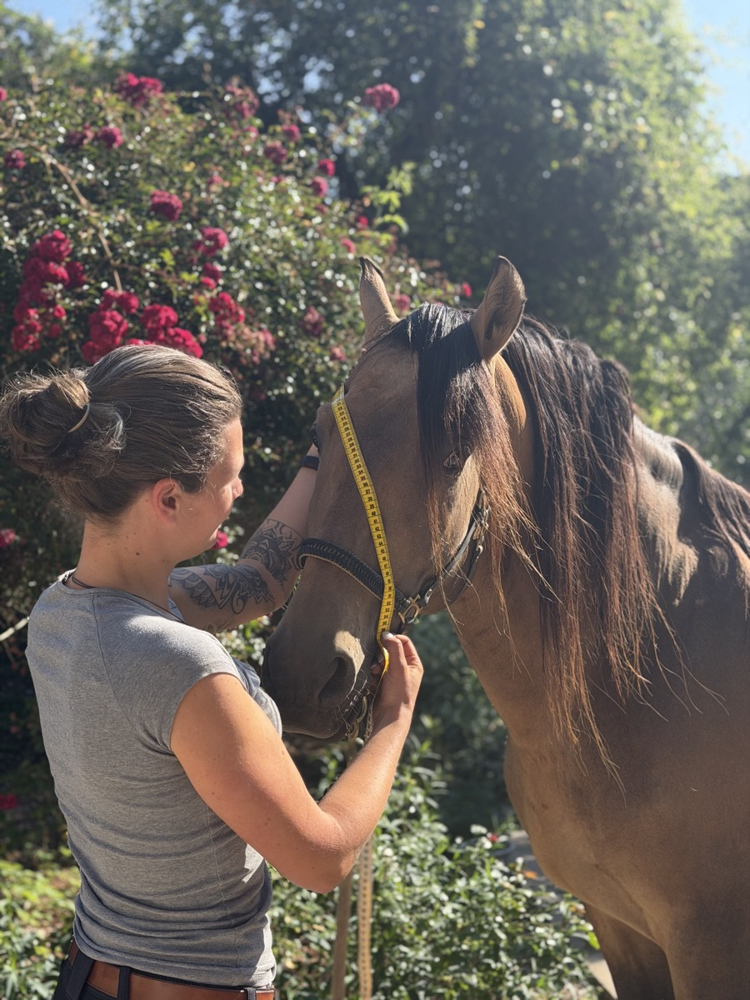
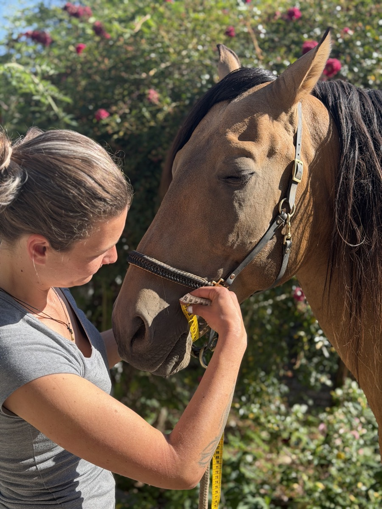
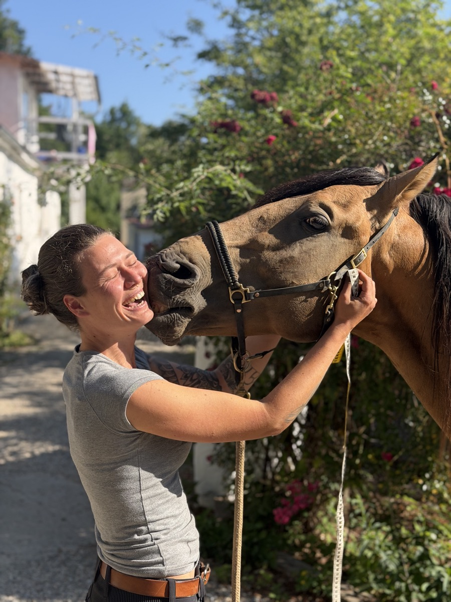

Hier zeigen wir jede Woche, was bei uns neu ist und was wir gerade machen.
18. August 2026
Neu: Näharbeiten für Markisen, Zelte, Segel und mehr
Wir erweitern unser Angebot! Ab sofort nähen und reparieren wir bei uns auch Markisen, Windschutzfänger für große Hallen, Segel sowie bewegliche Stoffe aller Art. Egal ob ein Riss genäht, ein Saum erneuert oder ein komplett neues Stück angefertigt werden soll – sprecht uns einfach an, wir schauen uns das gerne an. Kontakt aufnehmen.

13. August 2026
Neu im Sortiment: Meta Gloss
Ab sofort führen wir Meta Gloss bei uns: eine Anti-Filz-, Volumen- und Glanzpflege für Mähne und Schweif, die schon nach 1–2 Minuten Einwirkzeit sofort durchkämmbar macht und dabei Urin, Kot und Schmutz abhält. Die Wirkung hält mehrere Tage an, sodass ihr nicht nach jedem Waschen neu behandeln müsst. Erhältlich als Spray, Gel und im praktischen Kanister zum Nachfüllen für den Stall. Alle Infos und Preise gibt's auf der Produktseite.

28. Juli 2026
Vermessung unseres Tamino-Zaumes
Cheyenne hat heute unseren Tamino ausführlich vermessen, damit unser Tamino-Zaum am Ende perfekt sitzt.




22. Juli 2026
Heute ist Waschtag!
Wir waschen und pflegen unsere Pferde nur mit natürlichen Produkten und ohne Chemie, denn nur das ist hautschonend und super verträglich. Mein kleiner Cyrill (3,5 Jahre) ist sehr empfindlich, und nur RESACA hat alles beruhigt und gepflegt.
22. Juli 2026
Neue Pflegeprodukte im Sortiment
Diese Woche haben wir unsere Auswahl an Pflegeprodukten für Fell, Mähne und Schweif aufgefrischt. Schaut auf der Produktseite vorbei, dort seht ihr die aktuellen Produkte im Bild.